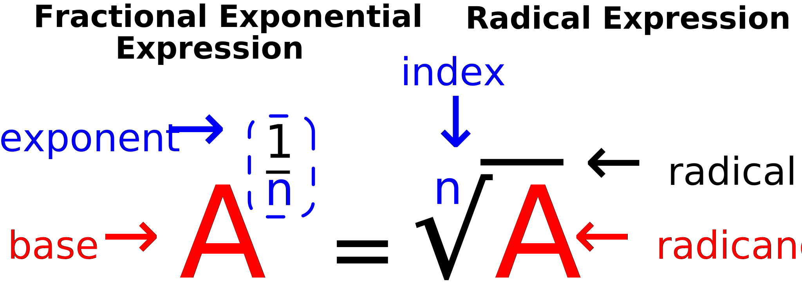
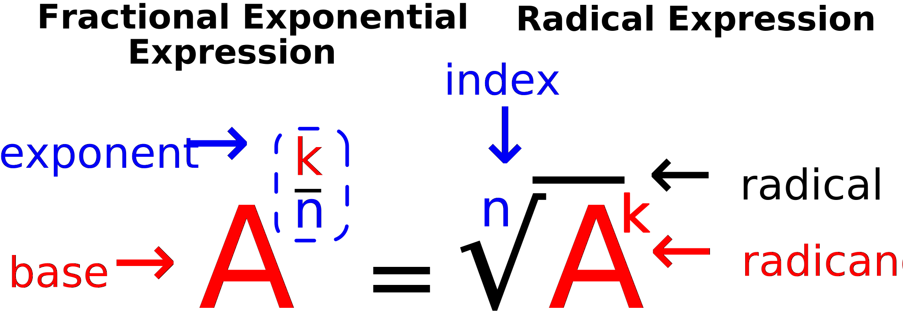

(The objective of)This learning module will focus on algebraic exponents and radicals.
The algebraic expressions shown below are how exponential and radical expressions are written in mathematics:
exponential
$$ A^{k} $$
radical
$$ \sqrt[n]{A} $$
Having a good understanding of exponents and radicals will prepare you for intermediate and advanced levels of algebra. Both of these algebraic expressions have real world applications in fields such as architecture, carpentry and masonry.
This module will cover how to write, multiply, divide and power exponentials; breifly introduce how to write and calculate radicals; and show the relationship between exponential and radical expressions.
The prerequisites for this module is a knowledge of arithmetic, fractions and a general understanding of algebraic variable.
At the end of this module, there is a five question, timed, multiple choice, JavaScript quiz that will asses your knowledge in determining and solving exponent and radical expressions. To move to the next section, click the "NEXT" button below.
Exponents and Radicals
An Introduction to Algebra
This learning module will focus on algebraic exponents and radicals.
The algebraic expressions shown below are how exponential and radical expressions are written in mathematics:
exponential
$$ A^{k} $$
radical
$$\sqrt[n]{A}$$
where c represents any number (rational or irration) and k represents any rational number.
Having a good understanding of exponents and radicals will prepare you for intermediate levels of algebra. Both of these algebraic expressions have real world applications in fields such as architecture, carpentry and masonry.
The prerequisites for this module is a knowledge of arithmetic, fractions, decimals, percentages and a general understanding of an algebraic variable.
At the end of this module, there is a five question, timed, multiple choice, JavaScript quiz that will asses your knowledge in determining and solving exponent and radical expressions. To move to the next section, click the "NEXT" button below.
Understanding Exponents
An exponent refers to how many times a number is multiplied by itself. For example, if the number 3 is multiplied by itself four times, we would write this as follows:
$$3 \times 3 \times 3 \times 3 = 81$$
We can rewrite the above expression as 34, which is the proper math notation for an exponential expression. In this example, 4 is called the Exponent or Power and 3 is the Base that is being multiplied by itself four times.
Here we have the example 34 represented as our exponential expression, but this holds true for any number whether 510 or 500100. Instead of using specific numbers, lets write an exponential expression with arbitrary values representing any number:
Where the base, A, and the exponent, k, represents any number.
Whenever an exponential expression has a 1 for it's power, it will always be equal to the base number. Subsequently, whenever an exponential expression has a 0 for it's power, it will always be equal to 1.
Identity Exponent Rule
$$ A^{ 1} = A $$
and
$$ A^{ 0} = 1 $$
Where A represents any base number.
Zero to the power of zero, 00, does not have an agreed upon value in mathematics; however for introductory to intermediate algebra, it has been agreed that 00 = 1.
Multiplying Exponents
We can multiply exponential expressions with different numbers.
Where A represents the base number or variable that is not equal to zero. k1 and k2 are exponents.
What happens when the denomenator's exponent is greater than the numerator's exponent? The same division formula still applies; the only difference is that the exponent will be negative as shown below:
In this learning module, we have discussed multiplying and divinding exponents, but what if we were to power and exponential as shown:
$$ {(3^{5})}^{3} $$
The way to solving these types of problems is to go back to the basic understanding of what an exponent is. An exponent tells us how many times to multiply a number or variable to itself. For this example we need to multiply 35 three times using the exponential product rule.
The answer is 315, but we could have obtained this answer faster if we just multiply the inner and outer exponents, 3 and 5, together.
$$ {(3^{5})}^{3} = 3^{5 \times 3} = 3^{15} $$
The Power rule for exponents states that when an exponential expression is raised to another exponent, you simply combine the exponents into one by multiplying them.
Power Rule
$$ (A^{k_1})^{k_2} = A^{k_1 \times k_2} $$
Where Ak1 is the exponential expression and k2 is the exponent.
Up to now we've only discussed exponents as whole number integers, but exponents can also be fractions and irrational numbers. For example, 41/2, 81/3, and 161/4 are all exponential fractions.
An integer exponent tells us how many times to multiply a base number whereas a fractional exponent that is less than 1 tells us to reduce the base number or variable.
Examples:
$$ 4^{ \frac{1}{2}} $$
the exponent tells us to reduce the base number, 4, by one half, which equals:
$$ \cancel{ 2 } \times 2 = 2 $$
$$ 8^{ \frac{1}{3}} $$
the exponent tells us to reduce the base number, 8, by one third, which equals:
The answer,2, is called the root or radical number for all three of these following examples. When an exponent is written a a fraction and we are determining the root of a base, we call the fractional exponential a radical expression and write them in a different mathematical form as the image below shows:

Where the redicand, A, represents a positive number ≠ 0.
For radical expressions we call the base a radicand and the radical sign indicates that the root will be taken of the radicand. The denominator exponent is called the index and tells to what degree the root will be taken to.
All of the examples thus shown have been radicals of integers with perfect squares, cubes or quadrants for their roots, but many integers don't have rational numbers as their roots. For example, the square root of 2, 3 and 5 are all irrational numbers. For this reason we only show these numbers square roots with the radical sign ( √ 2, √ 3 and √ 5 ) and not as their approximate values, which are 1.41, 1.73 and 2.24 respectively.
Although most integer's roots will not be a rational number, many integers will have roots that are the products/multiplications of a rational and irrational number.
To determine square roots of integers, use the factorization process you learned in arthmetic. If more help is needed, use a multiplications table.
**Although 30 is a multiple of 5 times 6, it doesn't have a perfect square that is a rational number; therefore, we leave the whole number under the radical sign for simplification.
Introduction to Radicals
Part Two
What about fractional exponents with numerators greater than 1 or a fraction that is greater than 1? For example, how do we write 43/2 as radical expression and find the root?
As the example above shows, we first mulitply the radicant then we find the root. For radical expressions, the numerator exponent is included with the radicant.

Where the redicand, Ak, represents a positive number ≠ 0.
Let's do some more examples so you can get a better understanding in how to solve these types of problems.